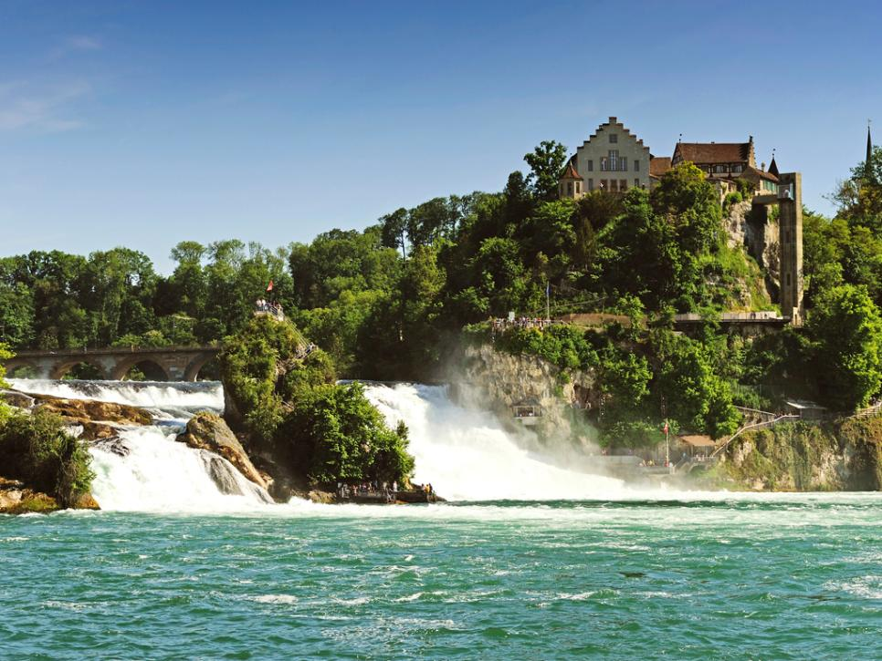

About Me
I am a student at UiTM Kota Bharu, currently studying in Finance for my degree.
List of website about myself
Other website about me are Biodata, Experience, Family and Gallery. These are only the images for my other websites, if you want to go to other websites, click at the top bar and choose whether to click family or biodata.